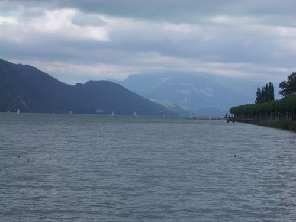
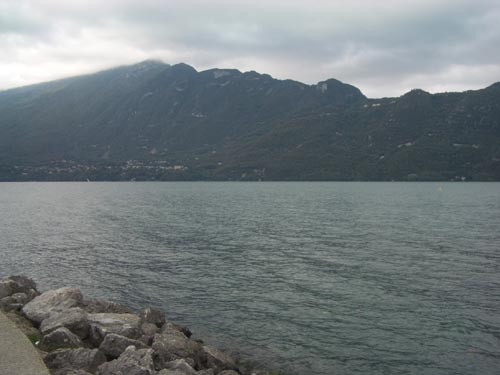
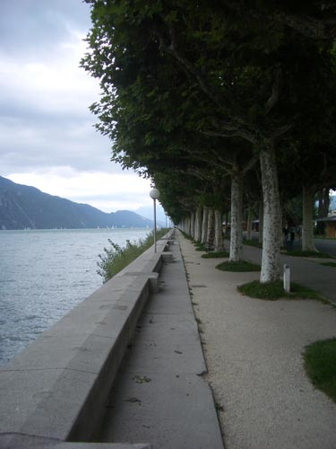

| Lac du Bourget | ||
|
 if you are staying in Aix-les-Bains get up one morning and cross under the railway tracks and head down to the lake shore looking north is le Columbier - under which lies Culoz that white smudge on the far shore is the Abbaye de Hautecombe - where Alice would buy honey and Gertrude would give her friend XXX the stamps that she saved from her American letters - we never made it there across the lake is Les Dents du Chat - through which the tunnel cuts on its way to Belley  and along the shore beyond the marina runs a long avenue of trees - as you walk along them enjoy the pleasure of repetition  regularity into the distance - like railway tracks |
||